Cell typing with a cluster tree
Source:vignettes/cell_typing_cluster_tree.Rmd
cell_typing_cluster_tree.Rmd1 Overview
This tutorial assigns a cell type to every cluster. It continues from the Atera Human Breast Cancer example, which reads, processes and clusters the data.
The annotation step deliberately overclusters and then uses a cluster tree rather than a flat marker list. A flat list of one-vs-all markers cannot distinguish a genuine cell type from a fragment of one, and it says nothing about how clusters relate. A tree gives three things a flat list cannot:
- conditional markers at each branch — what separates two sibling groups, where a gene that is uninformative overall can be decisive
- a specificity measure per cluster, so fragments can be flagged
- structure to reason over: broad lineages at the top, refined downward
2 Setup
Load the clustered object saved at the end of the Atera example.
library(arrow)
library(Giotto)
library(GiottoDisk)
project_dir <- "path/to/atera_project"
CLUS <- "leiden_clus"
g <- loadGiotto(project_dir, name = "clustered")The overclustered result from the previous example:


We start with clusters that are finer than the biological annotations that we want. One way to merge these back down to a set of meaningful annotations is by building a hierarchical tree of binary splits between the clusters based on the underlying expression information.
3 Build the cluster tree
To calculate the tree, we use calculateClusterTree(),
which averages the expression information per cluster, correlates every
pair of cluster means, then joins clusters by average linkage on 1 − r.
We limit the features used in the comparisons to just the highly
variable ones that were calculated in the previous example.
calculateClusterTree() returns a
giottoTree, which is a subclass of hclust with
some additional information attached. The returned tree is
kept in order to drive marker detection in later steps.
# get the set of highly variable features calculated earlier
# this content is stored in the feature metadata
hvf <- fDataDT(g, feat_type = "rna")[hvf == "yes"]$feat_ID
tree <- calculateClusterTree(g,
cluster_column = CLUS,
feats = hvf,
cor = "pearson",
distance = "average"
)giottoTree can be directly plotted using
hclust’s base plotting function.
plot(tree, hang = -1)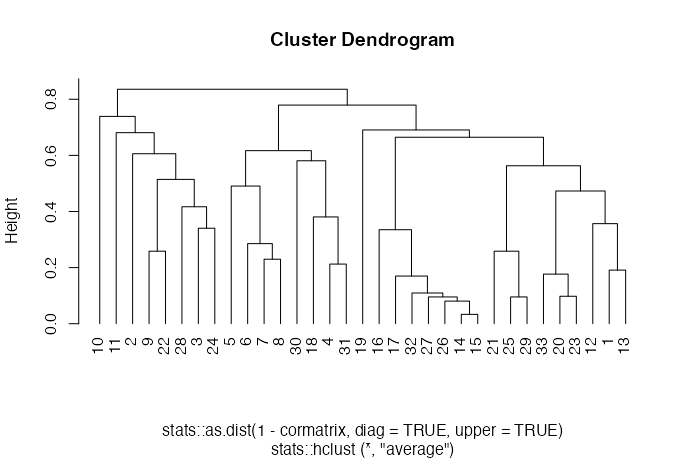
The object also retains an attached copy of the correlation matrix
used in its calculation. This can be plotted as a heatmap. It is the
matrix the branches were built from, so the colours and branches always
agree. To see correlations recomputed from a modified object in the
tree’s order, use
showClusterHeatmap(g, cluster_column = CLUS, cluster_custom_order = tree$labels[tree$order]).
We additionally register an as.data.frame() method that
converts the tree into a 4 column table with nodeID, node height, and
left and right cluster members.
splits <- as.data.frame(tree)
splitssplits print
nodeID node_h left right
1 32 0.83567196 10, 11, .... 5, 6, 7,....
2 31 0.77926573 5, 6, 7,.... 19, 16, ....
3 30 0.73893069 10 11, 2, 9....
4 29 0.69060516 19 16, 17, ....
5 28 0.68093568 11 2, 9, 22....
6 27 0.66462248 16, 17, .... 21, 25, ....
7 26 0.61684585 5, 6, 7, 8 30, 18, ....
8 25 0.60584668 2 9, 22, 2....
9 24 0.58076332 30 18, 4, 31
10 23 0.56299323 21, 25, 29 33, 20, ....
11 22 0.51437855 9, 22 28, 3, 24
12 21 0.49063392 5 6, 7, 8
13 20 0.47303127 33, 20, 23 12, 1, 13
14 19 0.41686759 28 3, 24
15 18 0.38058714 18 4, 31
16 17 0.35665906 12 1, 13
17 16 0.34030720 3 24
18 15 0.33505513 16 17, 32, ....
19 14 0.28543055 6 7, 8
20 13 0.25850553 9 22
21 12 0.25848853 21 25, 29
22 11 0.22984159 7 8
23 10 0.21256439 4 31
24 9 0.19108510 1 13
25 8 0.17674989 33 20, 23
26 7 0.16987595 17 32, 27, ....
27 6 0.10949094 32 27, 26, ....
28 5 0.09785856 20 23
29 4 0.09545566 25 29
30 3 0.09542765 27 26, 14, 15
31 2 0.08060030 26 14, 15
32 1 0.03333774 14 154 Markers
We will generate and use 3 sets of complementary markers across the clusters.
4.1 Per-cluster markers
scran (one-vs-all): for each cluster, the genes most strongly up against all other cells combined, ranked by pi (fold change × significance).
mk <- findMarkers_one_vs_all(g,
method = "scran",
cluster_column = CLUS,
min_feats = 10,
verbose = FALSE
)
mkscran output
Top p.value FDR logFC feats cluster ranking pi
<int> <num> <num> <num> <char> <char> <num> <num>
1: 1 0.000000e+00 0.000000e+00 2.0086708 NHERF1 1 1 617.97290
2: 23 0.000000e+00 0.000000e+00 1.8958029 ANKRD30A 1 2 583.24880
3: 18 0.000000e+00 0.000000e+00 1.8235154 NIBAN1 1 3 561.00937
4: 10 0.000000e+00 0.000000e+00 1.7548495 PREX1 1 4 539.88411
5: 29 0.000000e+00 0.000000e+00 1.6561292 BMPR1B 1 5 509.51254
---
4469: 200 1.438573e-158 1.301190e-156 0.5071475 TUBA1A 33 156 80.04921
4470: 215 1.288948e-153 1.084515e-151 0.5012218 DOCK5 33 159 76.63169
4471: 232 1.813975e-147 1.414431e-145 0.5049232 ANXA5 33 158 74.09312
4472: 245 8.578927e-141 6.334400e-139 0.5215053 STAT1 33 150 73.04546
4473: 251 3.521196e-137 2.537786e-135 0.5352538 PMP22 33 143 73.03715Gini (one-vs-all): for each cluster, the genes concentrated in that cluster and low everywhere else. This call also returns detection_margin, which flags clusters with no gene of their own.
gi <- findGiniMarkers_one_vs_all(g,
cluster_column = CLUS,
min_feats = 10,
verbose = FALSE
)
gigini output
feats cluster expression expression_gini detection detection_gini
<char> <char> <num> <num> <num> <num>
1: HSPB8 1 1.1513473 0.4195066125 0.5912543 0.419014875
2: CACNG4 1 1.0030545 0.4235475504 0.5734592 0.412867178
3: LYPD3 1 0.6257596 0.4183910435 0.3924696 0.413098035
4: REEP1 1 0.2734385 0.4065378277 0.1975911 0.407539851
5: CLIC6 1 0.9605914 0.4124796066 0.4968533 0.399046585
---
9216: SCUBE2 33 1.0557385 0.0005333577 0.5352480 0.048483295
9217: SIGLEC15 33 1.2010088 0.0384192283 0.6256527 0.005402858
9218: IST1 33 1.9082174 0.0382881641 0.7894909 0.004318472
9219: SNX14 33 1.0702414 0.0372580577 0.5744125 0.003896449
9220: OR4F17 33 3.1115409 0.0369468634 0.9454961 0.002194948
expression_rank detection_rank comb_score comb_rank detection_margin
<int> <int> <num> <int> <num>
1: 1 1 1.757795e-01 1 4.188130
2: 1 1 1.748689e-01 2 6.431605
3: 1 1 1.728365e-01 3 12.601194
4: 1 1 1.656804e-01 4 6.645217
5: 1 1 1.645986e-01 5 1.592331
---
9216: 2 1 2.585894e-06 16992 -35.519485
9217: 2 2 2.075736e-06 17164 -29.396560
9218: 2 2 1.653464e-06 17314 -20.840830
9219: 2 2 1.451741e-06 17386 -30.352977
9220: 2 2 8.109646e-07 17667 -5.4503924.2 Specificity
detection_margin in the Gini output is how many
percentage points more of a cluster’s cells detect a gene than of the
next-highest single cluster’s. A cluster whose best margin is low has no
gene of its own, which usually means an overclustered fragment or a cell
state rather than a distinct type.
lvls <- GiottoUtils::mixedsort(unique(as.character(pDataDT(g)[[CLUS]])))
spec <- gi[, .(margin = max(detection_margin),
best_gene = feats[which.max(detection_margin)]), by = cluster]
spec <- spec[match(lvls, cluster)]
spec[, low_specificity := margin < 25]
cat(sum(spec$low_specificity), "of", nrow(spec), "clusters flagged\n")13 of 33 clusters flaggedggplot code
cmeta <- pDataDT(g)
NCELL <- stats::setNames(as.integer(table(as.character(cmeta[[CLUS]]))[lvls]), lvls)
plot_spec <- data.table::copy(spec)
plot_spec[, n_cells := as.integer(NCELL[cluster])]
ggplot2::ggplot(plot_spec, ggplot2::aes(n_cells, margin, colour = low_specificity)) +
ggplot2::geom_point(size = 2) + ggplot2::scale_x_log10() +
ggplot2::geom_hline(yintercept = 25, linetype = 2, colour = "grey40") +
ggplot2::scale_colour_manual(values = c("FALSE" = "#3B7EA1", "TRUE" = "#C4622D"),
name = "margin < 25") +
ggplot2::labs(x = "cells in cluster", y = "best detection margin (points)",
title = "Cluster specificity") +
ggplot2::theme_minimal(base_size = 10)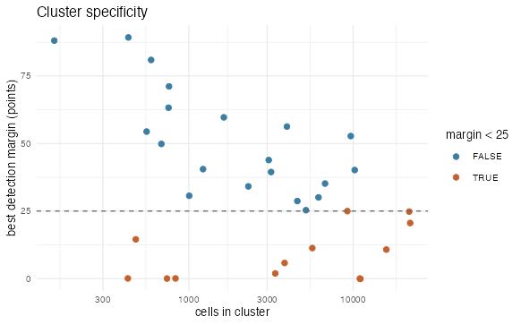
4.3 Tree node markers
For each split we count the strong markers: genes with a clear fold change that are also clearly significant.
nm <- findClusterTreeMarkers(g,
cluster_column = CLUS,
tree = tree,
method = "scran",
verbose = FALSE
)
node_meta <- nm$nodes
node_meta[, weak_split := n_strong < stats::quantile(n_strong, 0.2)]
cat(nrow(node_meta), "nodes,", sum(node_meta$weak_split),
"flagged as weak splits\n")32 nodes, 7 flagged as weak splitsggplot code
ggplot2::ggplot(node_meta, ggplot2::aes(reorder(factor(nodeID), -n_strong), n_strong,
fill = weak_split)) +
ggplot2::geom_col() +
ggplot2::scale_fill_manual(values = c("FALSE" = "#3B7EA1", "TRUE" = "#C4622D"),
name = "weak split") +
ggplot2::labs(x = "node", y = "separating genes",
title = "Genes separating the two sides of each split") +
ggplot2::theme_minimal(base_size = 10) +
ggplot2::theme(axis.text.x = ggplot2::element_text(size = 6, angle = 90, vjust = 0.5))A split with few strong markers, here the weakest fifth, means the two sides barely differ. Those clusters are good candidates for merging into one label.
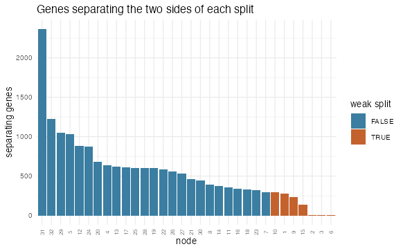
5 Assemble the annotation prompt
Next, we bring all of this evidence together for annotation.
writeClusterTreeQuery() writes a language model prompt that
lays out the tree, the markers at each split, and each cluster’s top
markers along with its specificity flag. Use context as a
freeform place to describe the sample. Anything that would help someone
reading the markers.
We write the prompt to a temp file. The text is also returned directly returned from the function for inspection.
temp <- file.path(tempdir(), "atera_celltyping_prompt.txt")
q <- writeClusterTreeQuery(g,
cluster_column = CLUS,
tree = tree,
markers = mk,
gini_markers = gi,
node_markers = nm,
context = list(
tissue = "human breast",
disease = "invasive carcinoma",
assay = "whole-transcriptome spatial, FFPE section"
),
file_name = temp
)
cat(length(q), "lines\n")537 lines
readLines(temp, n = 10) [1] "# Cell type annotation task"
[2] ""
[3] "tissue: human breast"
[4] "disease: invasive carcinoma"
[5] "assay: whole-transcriptome spatial, FFPE section"
[6] "169,420 cells in 33 transcriptional clusters."
[7] "Fix broad lineages at the TOP of the tree first, then refine downward"
[8] "to one cell type per cluster."
[9] ""
[10] "## 1. Cluster tree (root first; indentation = depth)"
...The request asks for a label for every cluster and for every branch point in the tree, where each branch’s label must describe all the clusters beneath it, for example “T cells” above “CD4 T cells” and “CD8 T cells”. That is what lets us annotate at several levels of detail from a single answer, in the next step.
Give the file to a model of your choice and save its reply. The reply is a JSON file, which we read back in below.
For reproducibility, we include an example output:
ans <- jsonlite::fromJSON(simplifyVector = FALSE, '{
"nodes": [
{"node": 32, "short": "all", "label": "all cells"},
{"node": 31, "short": "nonimm", "label": "non-immune cells"},
{"node": 30, "short": "imm", "label": "immune cells"},
{"node": 29, "short": "epi", "label": "epithelial cells"},
{"node": 28, "short": "leuk", "label": "non-mast leukocytes"},
{"node": 27, "short": "epi_main", "label": "breast epithelium (non-apocrine)"},
{"node": 26, "short": "strom", "label": "stromal cells"},
{"node": 25, "short": "mono_imm", "label": "mononuclear immune compartment"},
{"node": 24, "short": "mes", "label": "mesenchymal stroma"},
{"node": 23, "short": "epi_het", "label": "heterogeneous ductal epithelium"},
{"node": 22, "short": "mnl", "label": "mononuclear leukocytes"},
{"node": 21, "short": "vasc", "label": "vascular cells"},
{"node": 20, "short": "neo_duct", "label": "neoplastic ductal epithelium"},
{"node": 19, "short": "lym_assoc", "label": "lymphocyte-associated immune cells"},
{"node": 18, "short": "fib", "label": "fibroblasts"},
{"node": 17, "short": "ank_tum", "label": "ANKRD30A+ luminal carcinoma"},
{"node": 16, "short": "lym", "label": "lymphocytes"},
{"node": 15, "short": "er_tum", "label": "ER+ luminal carcinoma"},
{"node": 14, "short": "bv", "label": "blood vascular cells"},
{"node": 13, "short": "mye", "label": "myeloid cells"},
{"node": 12, "short": "lp", "label": "luminal progenitor lineage"},
{"node": 11, "short": "mural", "label": "mural cells"},
{"node": 10, "short": "fib_main", "label": "stromal fibroblasts"},
{"node": 9, "short": "ank_tum2", "label": "ANKRD30A+ luminal carcinoma (non-IFN)"},
{"node": 8, "short": "duct_assoc", "label": "duct-associated epithelium"},
{"node": 7, "short": "er_tum_nc", "label": "ER+ luminal carcinoma (non-cycling)"},
{"node": 6, "short": "er_tum_a", "label": "ER+ luminal carcinoma"},
{"node": 5, "short": "duct_unit", "label": "TFF1-region ductal epithelium"},
{"node": 4, "short": "gabrp", "label": "GABRP+ luminal epithelium"},
{"node": 3, "short": "er_tum_b", "label": "ER+ luminal carcinoma"},
{"node": 2, "short": "er_tum_c", "label": "ER+ luminal carcinoma"},
{"node": 1, "short": "er_tum_d", "label": "ER+ luminal carcinoma"}
],
"clusters": [
{"cluster": "1", "cell_type": "ANKRD30A+ luminal carcinoma cells", "confidence": "medium", "markers": ["ANKRD30A", "BMPR1B", "MUC1", "NIBAN1", "PREX1", "STC2", "MLPH", "TSKU"], "merge_with": null},
{"cluster": "2", "cell_type": "low-quality / artifact cells", "confidence": "low", "markers": ["OR4F17", "IST1", "SIGLEC15", "TRIM49D1", "KRBOX4", "GOLGA6L4", "KRT18"], "merge_with": null},
{"cluster": "3", "cell_type": "T cells", "confidence": "high", "markers": ["TRAC", "CD3E", "CD3D", "CD247", "ZAP70", "ITK", "LCK", "CD2"], "merge_with": null},
{"cluster": "4", "cell_type": "CXCL12+ ABCA10+ fibroblasts (normal-like)", "confidence": "medium", "markers": ["CXCL12", "ABCA6", "ABCA9", "ABCA10", "TNXB", "PDGFRA", "LUM", "SRPX"], "merge_with": null},
{"cluster": "5", "cell_type": "lymphatic endothelial cells", "confidence": "high", "markers": ["MMRN1", "PROX1", "LYVE1", "FLT4", "CCL21", "PDPN", "PKHD1L1"], "merge_with": null},
{"cluster": "6", "cell_type": "blood vascular endothelial cells", "confidence": "high", "markers": ["VWF", "PECAM1", "KDR", "PLVAP", "ROBO4", "TIE1", "EGFL7", "AQP1"], "merge_with": null},
{"cluster": "7", "cell_type": "arteriolar vascular smooth muscle cells", "confidence": "medium", "markers": ["NOTCH3", "TAGLN", "RERGL", "TPM2", "MCAM", "GJA5", "SEMA3G", "GJA4"], "merge_with": null},
{"cluster": "8", "cell_type": "pericytes", "confidence": "high", "markers": ["RGS5", "STEAP4", "ABCC9", "HIGD1B", "NOTCH3", "ITGA7", "GJC1"], "merge_with": null},
{"cluster": "9", "cell_type": "monocyte / cDC2-like myeloid cells", "confidence": "medium", "markers": ["LYZ", "MNDA", "ITGAX", "CLEC10A", "HLA-DQB1", "CD74", "CSF1R", "SPI1"], "merge_with": null},
{"cluster": "10", "cell_type": "mast cells", "confidence": "high", "markers": ["CPA3", "TPSB2", "CMA1", "CTSG", "KIT", "MS4A2", "HDC", "IL1RL1"], "merge_with": null},
{"cluster": "11", "cell_type": "plasma cells", "confidence": "high", "markers": ["MZB1", "JCHAIN", "IGKC", "IGHA1", "IGHA2", "DERL3", "TENT5C", "IRF4"], "merge_with": null},
{"cluster": "12", "cell_type": "interferon-high luminal carcinoma cells", "confidence": "medium", "markers": ["MX1", "IFIT1", "IFIT3", "ISG15", "CXCL10", "STAT1", "MUC1", "BMPR1B"], "merge_with": null},
{"cluster": "13", "cell_type": "ANKRD30A+ luminal carcinoma cells", "confidence": "low", "markers": ["ANKRD30A", "BMPR1B", "NIBAN1", "MUC1", "GATA3", "TAGLN", "SFRP1"], "merge_with": "1"},
{"cluster": "14", "cell_type": "ER+ luminal carcinoma cells", "confidence": "medium", "markers": ["CCND1", "GATA3", "FOXA1", "AGR3", "SCUBE2", "CA12", "TFF3", "TSPAN8"], "merge_with": null},
{"cluster": "15", "cell_type": "ER+ luminal carcinoma cells", "confidence": "medium", "markers": ["CCND1", "FOXA1", "GATA3", "XBP1", "MSMB", "AGR3"], "merge_with": "14"},
{"cluster": "16", "cell_type": "cycling ER+ luminal carcinoma cells", "confidence": "high", "markers": ["H1-5", "H3C2", "TYMS", "PRC1", "TUBB", "CCND1", "GATA3", "FOXA1"], "merge_with": "17"},
{"cluster": "17", "cell_type": "ER+ luminal carcinoma cells", "confidence": "medium", "markers": ["CCND1", "GATA3", "ELAPOR1", "AGR3", "TBC1D9", "XBP1", "CDH1"], "merge_with": null},
{"cluster": "18", "cell_type": "SFRP4+ GREM1+ fibroblasts", "confidence": "medium", "markers": ["SFRP4", "GREM1", "OGN", "PTGIS", "LEPR", "GAS1", "IGFBP6", "DES"], "merge_with": null},
{"cluster": "19", "cell_type": "apocrine-like (PIP+ MUCL1+) luminal cells", "confidence": "medium", "markers": ["PIP", "MUCL1", "MYBPC1", "TAT", "KLK2", "SERPINA1", "ANKRD30A"], "merge_with": null},
{"cluster": "20", "cell_type": "myoepithelial cells", "confidence": "medium", "markers": ["TAGLN", "MYLK", "CSRP1", "TPM2", "TNS4", "COL17A1", "TRIM29", "LGR6"], "merge_with": null},
{"cluster": "21", "cell_type": "ELF5+ luminal progenitor cells", "confidence": "high", "markers": ["ELF5", "KIT", "EHF", "KRT15", "PIGR", "AQP5", "PADI2", "SFRP1"], "merge_with": null},
{"cluster": "22", "cell_type": "tissue-resident macrophages (LYVE1+ FOLR2+)", "confidence": "high", "markers": ["C1QA", "C1QC", "F13A1", "LYVE1", "FOLR2", "MRC1", "CD163", "SIGLEC1"], "merge_with": null},
{"cluster": "23", "cell_type": "TFF1+ luminal carcinoma cells", "confidence": "low", "markers": ["TFF1", "TFF3", "CCND1", "GATA3", "FOXA1", "AGR3"], "merge_with": null},
{"cluster": "24", "cell_type": "B cells", "confidence": "high", "markers": ["MS4A1", "CD19", "CD79A", "BANK1", "FCRL1", "BLK", "CD22"], "merge_with": null},
{"cluster": "25", "cell_type": "GABRP+ KIT+ luminal progenitor-like cells", "confidence": "medium", "markers": ["GABRP", "KIT", "PROM1", "CCL28", "VTCN1", "KRT23", "KRT81", "EHF"], "merge_with": null},
{"cluster": "26", "cell_type": "ER+ luminal carcinoma cells", "confidence": "low", "markers": ["CCND1", "GATA3", "FOXA1", "XBP1"], "merge_with": "14"},
{"cluster": "27", "cell_type": "ER+ luminal carcinoma cells", "confidence": "low", "markers": ["CCND1", "GATA3", "FOXA1", "XBP1"], "merge_with": "14"},
{"cluster": "28", "cell_type": "cDC1 (conventional type 1 dendritic cells)", "confidence": "high", "markers": ["XCR1", "WDFY4", "IDO1", "CLNK", "IRF8", "DNASE1L3", "SLC24A4"], "merge_with": null},
{"cluster": "29", "cell_type": "GABRP+ luminal cells (mixed hormone-sensing)", "confidence": "low", "markers": ["GABRP", "KRT23", "TTYH1", "TBC1D9", "FOXA1", "AGR3"], "merge_with": "25"},
{"cluster": "30", "cell_type": "adipocytes", "confidence": "high", "markers": ["ADIPOQ", "PLIN1", "PLIN4", "CIDEC", "LPL", "FABP4", "GPD1"], "merge_with": null},
{"cluster": "31", "cell_type": "matrix cancer-associated fibroblasts (POSTN+ COL10A1+)", "confidence": "high", "markers": ["POSTN", "COL10A1", "COL8A1", "COMP", "MMP11", "COL3A1", "COL1A2"], "merge_with": null},
{"cluster": "32", "cell_type": "ER+ luminal carcinoma cells", "confidence": "low", "markers": ["CCND1", "GATA3", "FOXA1", "XBP1"], "merge_with": "14"},
{"cluster": "33", "cell_type": "TNC+ basal-like / EMT-like epithelial cells", "confidence": "medium", "markers": ["TNC", "KRT5", "S100A2", "ITGB6", "FN1", "THBS1", "ITGA2", "L1CAM"], "merge_with": null}
]
}')6 Apply the annotation, at several levels
Because every branch has a label, the tree can be cut at any depth:
near the top it gives a few broad groups, near the bottom one label per
cluster. k is the number of groups to cut into. Here we ask
for 3, 8 and 16 groups, plus one label per cluster.
# see collapsible above for example output
ans <- jsonlite::fromJSON("atera_cell_types.json", simplifyVector = FALSE)
labels <- list(
clusters = stats::setNames(
vapply(ans$clusters, function(x) x$cell_type, ""),
vapply(ans$clusters, function(x) as.character(x$cluster), "")
),
nodes = stats::setNames(
vapply(ans$nodes, function(x) x$short, ""),
vapply(ans$nodes, function(x) as.character(x$node), "")
)
)
g <- annotateClusterTree(g,
tree = tree,
labels = labels,
cluster_column = CLUS,
k = c(3, 8, 16, length(lvls))
)This adds one annotation column to the cell metadata for each value
of k, from broad lineages down to the finest labels.
table(g$cell_types_k3) epi imm strom
98774 23375 47271 7 Results
7.1 The annotated tree
plotClusterTree() draws everything in one figure: the
tree, a band of labels for each level of k, and tracks
showing each cluster’s size and detection margin. Read the bands from
top to bottom to see broad labels split into finer ones. The tracks show
which clusters the data really supports.
GiottoVisuals::plotClusterTree(g,
cluster_column = CLUS,
tree = tree,
labels = labels,
k = c(3, 8, 16),
gini_markers = gi,
node_labels = FALSE,
palette = c("orange", "magenta", "red")
)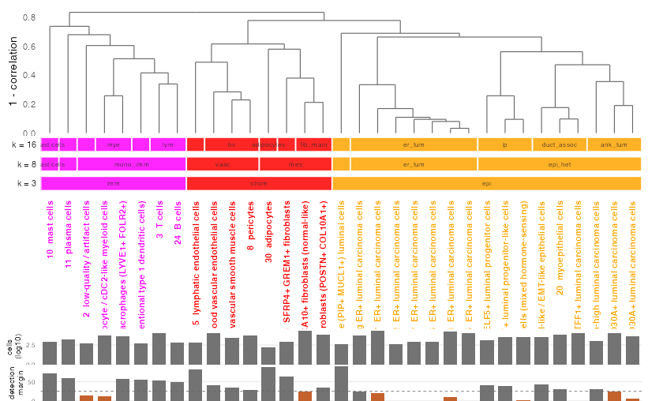
A leaf with a short detection margin bar has no gene of its own — a merge candidate, and a reason to annotate that branch one level coarser.
7.2 coarse annotations
k3 (coarsest)
spatPlot2D(g,
color_as_factor = TRUE,
cell_color = "cell_types_k3",
point_border_stroke = 0,
point_size = 0.3,
background_color = "black",
theme_param = list(
legend.position = "bottom"
)
)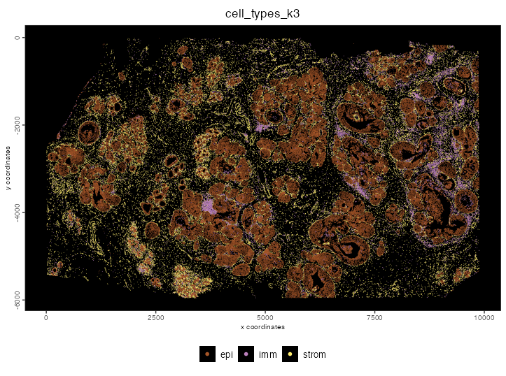
k8 (coarsest)
spatPlot2D(g,
color_as_factor = TRUE,
cell_color = "cell_types_k8",
point_border_stroke = 0,
point_size = 0.3,
background_color = "black",
theme_param = list(
legend.position = "bottom"
)
)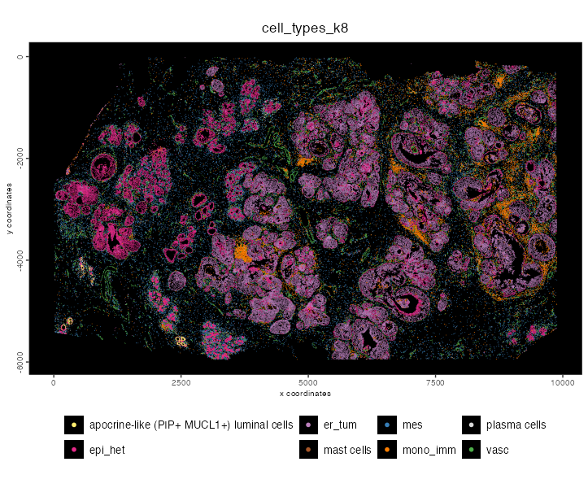
7.3 finest annotation
# for consistency with downstream plots
fine_clus <- unique(g$cell_types_k33)
fine_colors <- getDistinctColors(length(fine_clus)) |>
stats::setNames(fine_clus)
plotUMAP(g,
color_as_factor = TRUE,
cell_color = "cell_types_k33",
cell_color_code = fine_colors,
point_border_stroke = 0,
point_size = 0.3,
show_center_label = TRUE,
label_size = 2,
show_legend = FALSE
)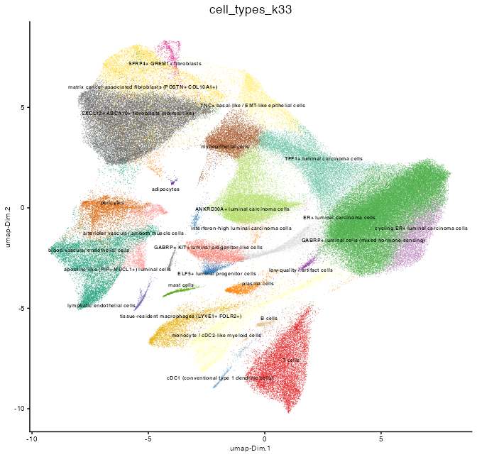
spatPlot2D(g,
color_as_factor = TRUE,
cell_color = "cell_types_k33",
cell_color_code = fine_colors,
point_border_stroke = 0,
point_size = 0.3,
background_color = "black",
show_legend = FALSE
)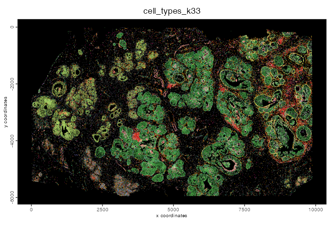
The legend was too small to read for the spatPlot2D(),
but colors match the UMAP above.
7.4 Each lineage in tissue
The tissue is the real test of the labels. Expression alone can be misleading, but cell types should sit where we expect them. Epithelial cells should form duct-like structures. Immune cells, fibroblasts and endothelial cells should be spread through the stroma between them.
cmeta <- pDataDT(g)
lineage_groups <- cmeta[, .(fine = unique(cell_types_k33)), by = cell_types_k3]
coarse_types <- unique(lineage_groups$cell_types_k3)
for (ctype in coarse_types) {
fine_types <- lineage_groups[cell_types_k3 == ctype, fine]
spatPlot2D(g,
color_as_factor = TRUE,
cell_color = "cell_types_k33",
cell_color_code = fine_colors,
select_cell_groups = fine_types,
point_border_stroke = 0,
point_size = 0.3,
show_other_cells = TRUE,
other_cell_color = "lightgrey",
other_point_size = 0.1,
other_cells_alpha = 0.2,
title = ctype,
legend_text = 7
)
}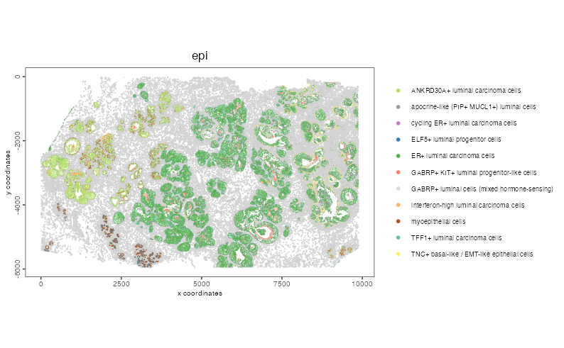
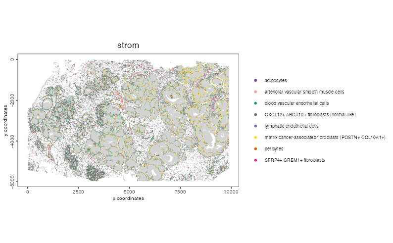
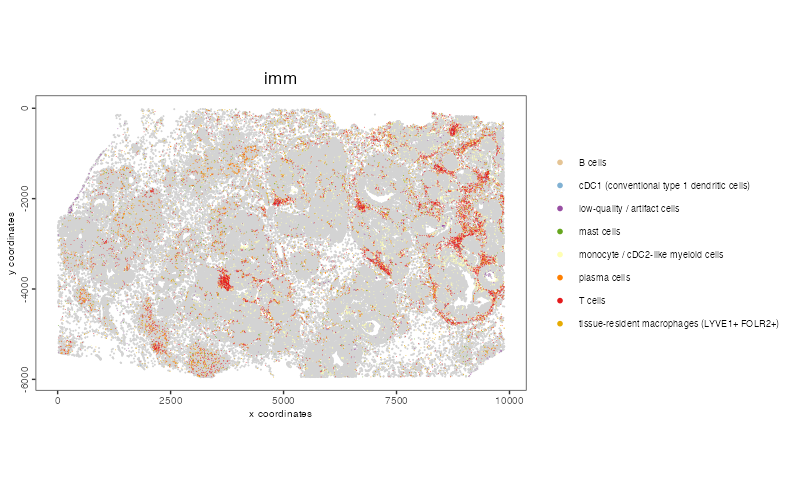
7.5 Markers, in tree order
ord <- tree$labels[tree$order]
# top 2 markers per cluster, taken in tree order so the dots run diagonally
top2 <- unique(mk[order(match(cluster, ord)), head(.SD, 2), by = cluster]$feats)
cmeta <- pDataDT(g)
ct33 <- stats::setNames(cmeta$cell_types_k33, as.character(cmeta[[CLUS]]))
ct33 <- ct33[!duplicated(names(ct33))]
pl <- dotPlot(g,
feats = rev(top2), # feats are drawn bottom-up; rev puts cluster 1's at the top
cluster_column = CLUS,
cluster_custom_order = ord,
dot_scale = 4.5,
dot_size_threshold = 5,
title = "Top markers per cluster, clusters in tree order",
axis_text = 8,
theme_param = list(
axis.text.x = ggplot2::element_text(angle = 60, hjust = 1),
axis.text.y = ggplot2::element_text(size = 6)
),
show_plot = FALSE,
return_plot = TRUE
)
pl + ggplot2::scale_x_discrete(labels = function(x) sprintf("%s %s", x, ct33[x])) +
ggplot2::labs(x = NULL, y = NULL, colour = "mean\nnormalized", size = "% detected")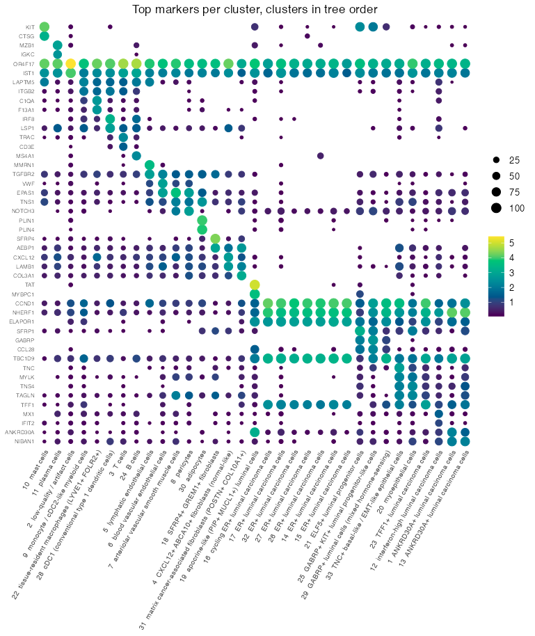
8 Save
g <- saveGiotto(g, name = "annotated")9 Session info
R version 4.5.2 (2025-10-31)
Platform: aarch64-apple-darwin20
Running under: macOS Sequoia 15.5
Matrix products: default
BLAS: /System/Library/Frameworks/Accelerate.framework/Versions/A/Frameworks/vecLib.framework/Versions/A/libBLAS.dylib
LAPACK: /Library/Frameworks/R.framework/Versions/4.5-arm64/Resources/lib/libRlapack.dylib; LAPACK version 3.12.1
locale:
[1] en_US.UTF-8/en_US.UTF-8/en_US.UTF-8/C/en_US.UTF-8/en_US.UTF-8
time zone: America/New_York
tzcode source: internal
attached base packages:
[1] stats graphics grDevices utils datasets methods base
other attached packages:
[1] GiottoDisk_0.0.0.3 Giotto_4.3.0 GiottoClass_0.7.7 arrow_23.0.1.2
loaded via a namespace (and not attached):
[1] colorRamp2_0.1.0 gridExtra_2.3
[3] rlang_1.2.0 magrittr_2.0.5
[5] otel_0.2.0 GiottoUtils_0.2.7
[7] matrixStats_1.5.0 compiler_4.5.2
[9] callr_3.7.6 systemfonts_1.3.1
[11] png_0.1-9 vctrs_0.7.3
[13] pkgconfig_2.0.3 SpatialExperiment_1.20.0
[15] fastmap_1.2.0 backports_1.5.1
[17] magick_2.9.0 XVector_0.50.0
[19] scuttle_1.20.0 labeling_0.4.3
[21] ggraph_2.2.2 ps_1.9.1
[23] ragg_1.5.0 purrr_1.2.1
[25] bit_4.6.0 xfun_0.56
[27] bluster_1.20.0 cachem_1.1.0
[29] beachmat_2.26.0 jsonlite_2.0.0
[31] pak_0.9.2 DelayedArray_0.36.1
[33] BiocParallel_1.44.0 tweenr_2.0.3
[35] terra_1.9-27 irlba_2.3.7
[37] parallel_4.5.2 cluster_2.1.8.1
[39] R6_2.6.1 RColorBrewer_1.1-3
[41] limma_3.66.0 reticulate_1.46.0
[43] GenomicRanges_1.62.1 scattermore_1.2
[45] knitr_1.51 Rcpp_1.1.1-1.1
[47] Seqinfo_1.0.0 assertthat_0.2.1
[49] SummarizedExperiment_1.40.0 base64enc_0.1-6
[51] IRanges_2.44.0 Matrix_1.7-4
[53] igraph_2.3.2 tidyselect_1.2.1
[55] abind_1.4-8 viridis_0.6.5
[57] codetools_0.2-20 processx_3.8.6
[59] lattice_0.22-7 tibble_3.3.1
[61] Biobase_2.70.0 withr_3.0.2
[63] S7_0.2.1 evaluate_1.0.5
[65] polyclip_1.10-7 filelock_1.0.3
[67] pillar_1.11.1 MatrixGenerics_1.22.0
[69] checkmate_2.3.4 stats4_4.5.2
[71] plotly_4.12.0 generics_0.1.4
[73] RcppHNSW_0.6.0 S4Vectors_0.48.1
[75] ggplot2_4.0.2 scales_1.4.0
[77] gtools_3.9.5 glue_1.8.1
[79] BPCells_0.3.1 metapod_1.18.0
[81] lazyeval_0.2.2 tools_4.5.2
[83] GiottoVisuals_0.2.16 tilework_1.0.0
[85] BiocNeighbors_2.4.0 data.table_1.18.4
[87] ScaledMatrix_1.18.0 locfit_1.5-9.12
[89] rgl_1.3.34 scran_1.38.1
[91] graphlayouts_1.2.2 tidygraph_1.3.1
[93] cowplot_1.2.0 grid_4.5.2
[95] tidyr_1.3.2 edgeR_4.8.2
[97] colorspace_2.1-2 SingleCellExperiment_1.32.0
[99] BiocSingular_1.26.1 ggforce_0.5.0
[101] cli_3.6.6 rsvd_1.0.5
[103] textshaping_1.0.4 S4Arrays_1.10.1
[105] viridisLite_0.4.3 ggdendro_0.2.0
[107] dplyr_1.2.0 gtable_0.3.6
[109] digest_0.6.39 progressr_0.19.0
[111] BiocGenerics_0.56.0 dqrng_0.4.1
[113] SparseArray_1.10.10 ggrepel_0.9.6
[115] rjson_0.2.23 htmlwidgets_1.6.4
[117] farver_2.1.2 memoise_2.0.1
[119] htmltools_0.5.9 lifecycle_1.0.5
[121] httr_1.4.7 statmod_1.5.1
[123] bit64_4.6.0-1 MASS_7.3-65